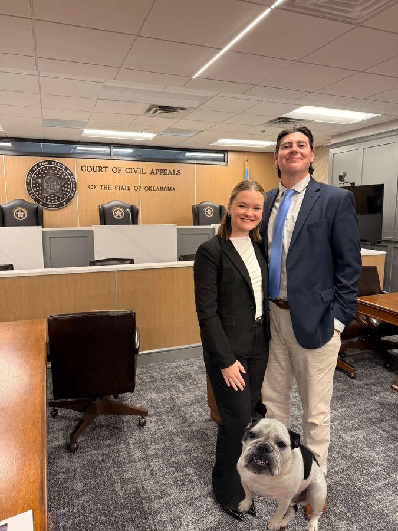

Divorce
Contested and uncontested divorce, property and debt division, alimony, and agreements that protect your financial future.
Learn more about DivorceFamily law, personal injury, estate planning, and defense, handled by a small team that knows your name and explains things plainly.
Fictional firm, created for a law school demonstration.
Sampson Family Law keeps its caseload small so clients reach their attorney directly, get a written plan after the first meeting, and are never surprised by a bill.
We favor agreement where it is realistic and prepare every case as though a judge will hear it.
About the firm
Contested and uncontested divorce, property and debt division, alimony, and agreements that protect your financial future.
Learn more about DivorceParenting plans, custody and visitation, relocation, and modifications centered on your child's stability and well-being.
Learn more about Child CustodyEstablishing, calculating, modifying, and enforcing child support under Oklahoma's guidelines, with clear numbers and no surprises.
Learn more about Child SupportStructured, confidential negotiation that helps families resolve parenting and property issues without a courtroom battle.
Learn more about MediationPaternity, adoption, guardianship, prenuptial agreements, and protective orders, with steady counsel for every stage of family life.
Learn more about Family LawDUI and criminal defense, including where criminal and family matters intersect: protective orders, domestic charges, and custody.
Learn more about Criminal Defense & DUICar wrecks and other injuries: dealing with insurers, medical bills, and lost work so you can focus on recovering.
Learn more about Personal InjuryMissed diagnoses and medical errors, investigated carefully with qualified medical experts.
Learn more about Medical MalpracticeSimple wills, powers of attorney, and planning for the people (and pets) who depend on you.
Learn more about Wills & Estate PlanningFictional testimonials from fictional characters, written for a class demonstration. Past results do not guarantee future outcomes.
We cannot promise a beach. We can promise to handle the paperwork so you can get back to your life.
Read client stories| Monday – Thursday | 8:30 am – 5:30 pm |
| Friday | 8:30 am – 4:00 pm |
| Saturday | By appointment |
| Sunday | Closed |
Schedule a confidential consultation. We will listen first and explain your options in plain English.
Demonstration only: consultations, fees, and the firm itself are fictional.